· EEM312
EEM312 Sayısal Elektronik: Final Sınavları ve Çözümleri (2003–2006)
EEM312 – Sayısal Elektronik · 09.06.2003 · 16.10.2026
Bu yazı, Başkent Üniversitesi EEM312 Sayısal Elektronik dersinin (Prof. Dr. Emin Akata) 2003–2006 yıllarına ait dört yarıyıl sonu (final) sınavını bir araya getiriyor: 09.06.2003, 09.06.2004, 03.06.2005 ve 06.06.2006. 2003 sınavı yalnız sorulardan oluşuyor; 2004–2006 sınavlarında hocanın çözümleri de var. Sorular ve çözümler yazıya döküldü, devre şekilleri görsel olarak eklendi. Aynı sınavların başka klasörlerdeki kopyaları (ör. FINAL_EEM312_05_S.doc, 2004.pdf) elendi. Orijinal Word dosyaları yazının sonunda ZIP olarak indirilebilir. Aynı dersin ara sınavları için: Ara Sınavlar 2003–2006, Ara Sınavlar 2007–2010; sonraki finaller: Final Sınavları 2007–2011.
Sınavlara eklenen hatırlatma formülleri (2003 ve 2006):
- I_D = k′(W/L)[(V_GS − V_T)V_min − V_min²/2](1 + λV_DS), V_min = min[(V_GS − V_T), V_DS, V_DSAT]
- V_T = V_T0 + γ(√(|2φ_F| + |V_SB|) − √|2φ_F|)
- t_p = t_p0(p + gf/γ), g_inv = 1, p_inv = 1, γ = 1 varsayımı
- G = ∏g_i, F = C_L/C_g1, H = GFB, h = H^(1/N), h = gf
- s_i = (g₁s₁/g_i) ∏(j=1…i−1)(f_j/b_j), P₀→₁ = P₀ × P₁
2003 – Final sınavı (09.06.2003)
Soru 1 (20p, her şık 4p)
- Bir geçitin (gate) "regenerative" özellik taşıması ne anlama gelir? Bu özelliğin olup olmadığını VTC'ye bakarak nasıl anlayabiliriz?
- Sizce 486DX2 ve Pentium mikroişlemcilerinin "die" maliyetleri göreli olarak nasıldır? Gerekçenizi belirtiniz.
- "Velocity saturation" nedir ve nasıl oluşur? Bu oluşum kısa kanallı transistörlerde niçin daha etkindir?
- F = A·B işlevini PT (pass transistor) mantığı ile gerçekleştiren yapıyı çiziniz ve bu yapıda ikinci transistöre niçin gerek duyulduğunu açıklayınız.
- CMOS yapılarda PUN ve PDN bölümleri niçin sırasıyla PMOS ve NMOS transistörlerden oluşur?
Soru 2 (30p)
- a) 3 girişli CMOS NAND ve NOR geçitlerini çiziniz; minimum büyüklükteki inverter için PMOS/NMOS oranı 2 iken bu geçitlerin inverter ile aynı eşdeğer dirence sahip olmasını sağlayacak boyutlandırmayı ve mantıksal eforlarını (logical effort) bulunuz.
- b) Aşağıdaki devrede minimum gecikme için a, b ve c ölçekleme değerlerini bulunuz (1 boyutlu inverter → 3 girişli NOR (a) → 3 girişli NAND (b) → inverter (c) → yük 10).
- c) Girdiler ilintisiz ve düzgün dağılımlı, glitch yok varsayılarak çıkış sinyalinin 0'dan 1'e geçiş olasılığını bulunuz.
- d) İdeal olmayan fiziksel koşullarda NAND geçidi için kritik sinyal hangisi olurdu? Devrenin daha hızlı çalışması için nasıl bir bağlantı önlemi (reordering) alırdınız?
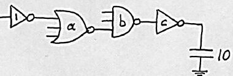
Soru 3 (25p)
Tablodaki 5 ölçüm kısa kanallı bir NMOS transistöre aittir. V_DSAT = 0,6 V, k′ = 100 µA/V² olduğuna göre V_T0, λ ve W/L değerlerini bulunuz. Aynı veriden body-effect katsayısı (γ) bulunabilir mi? Nasıl? (Her ölçüm için transistörün durumunu — velocity sat., sat., cut-off, linear — göz önünde bulundurunuz.)
| Ölçüm | V_GS (V) | V_DS (V) | V_BS (V) | I_D (µA) |
|---|---|---|---|---|
| 1 | 2,5 | 1,8 | 0 | 1812 |
| 2 | 2 | 1,8 | 0 | 1297 |
| 3 | 2 | 2,5 | 0 | 1361 |
| 4 | 2 | 1,8 | −1 | 1146 |
| 5 | 2 | 1,8 | −2 | 1039 |
Soru 4 (25p)
Aşağıdaki AND-OR-INVERT devresinin çıktı işlevini (A, S, B, S′ girişleri; tüm girdilerin değillenmiş biçimleri de var) a) statik CMOS, b) differential pass transistor (CPL), c) transmission gate, d) DCVSL yapılarında ayrı ayrı çiziniz.
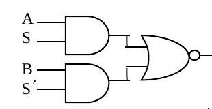
2004 – Yarıyıl sonu sınavı (09.06.2004)
Soru 1 (30p, her şık 5p)
a) F = A·B işlevini pass transistor mantığıyla gerçekleştirin; ikinci transistör niçin gerekli?
B = 1 iken çıkıştan F = AB = A alınır; A'nın 1 ya da 0 olmasına göre çıkış küçük bir dirençle V_DD'ye ya da toprağa bağlanır. B = 0 olduğunda üstteki transistör "off" olacağından, ikinci (alttaki) transistör olmasaydı çıkış ne V_DD'ye ne toprağa bağlı kalır, "floating" olurdu; bu da statik geçit olma özelliğini bozar. İkinci transistör (gate'i B′'de) B = 0 iken çıkışı toprağa bağlar.
b) Bir geçitte güç ve enerji tüketiminin bileşenleri:
- E = C_L V_DD² P₀→₁ + t_sc V_DD I_peak P₀→₁ + V_DD I_leakage
- P = C_L V_DD² f₀→₁ + t_sc V_DD I_peak f₀→₁ + V_DD I_leakage, f₀→₁ = P₀→₁ × f_clock
Birinci terimler dinamik, ikinciler kısa devre (direct path), üçüncüler sızıntı (leakage) bileşenidir. Dinamik tüketim toplam yük sığası C_L, besleme gerilimi V_DD ve enerji tüketen anahtarlama etkinliği (olasılığı P₀→₁) ile; kısa devre tüketimi her iki transistörün birlikte ilettiği süre t_sc ve bu süredeki tepe akım ile; sızıntı tüketimi doğrudan sızıntı akımı ile ilgilidir.
c) p-n ekleminde boşaltılmış bölge yükü ileri mi ters eğilimlemede mi büyüktür? Ne zaman sıfır olur?
Q_j = A_D √(2ε_si q (N_A N_D/(N_A + N_D)) (φ₀ − V_D)). Burada A_D kesit alanı, ε_si silisyumun geçirgenliği, N_A ve N_D katkı yoğunlukları, φ₀ "built-in" potansiyel, V_D eklem gerilimidir (ters eğilimlemede negatif, ileri eğilimlemede pozitif). (φ₀ − V_D) ters eğilimlemede daha büyük olduğundan Q_j de daha büyüktür. İleri eğilimleme gerilimi V_D = φ₀ olduğunda Q_j = 0 olur.
d) MOS transistör hangi koşulda ideal akım kaynağı gibi davranır?
Doyumda: I_D′ = (k′_n/2)(W/L)(V_GS − V_T)², V_DS'den bağımsız (kanal boyu modülasyonu yok sayılırsa). Pratikte V_DS arttıkça pinch-off noktası drain'den içeri çekilir, etkin kanal kısalır ve I_D = I_D′(1 + λV_DS) olur; akım V_DS'den bağımsız olamaz. Uzun kanallı transistörlerde bu etki daha azdır; doyumdayken ideal akım kaynağına daha yakındırlar.
e) CMOS inverterin VTC'si ve transistör durumları:
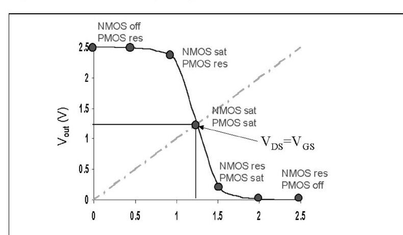
f) Kısa devre güç kaybı ile C_L ilişkisi:
Büyük C_L'de (şekil a) sığacın boşalması girdinin yükselme süresine göre yavaş olduğundan, girdi yükselirken PMOS'un V_GS'si hızla düşer ve transistör kesime gider; I_sc ≈ 0 olur. C_L küçükse (şekil b) sığaç hızla boşalır, girdinin uzun yükseliş süresinin büyük kısmında PMOS iletimde kalır ve en büyük I_sc akar. Kısa devre kaybını azaltmak için C_L'nin büyük olmasında yarar vardır.
Soru 2 (20p): Body effect
Enhancement MOS transistör: V_T0 = 0,8 V, γ = 0,2 V^½, λ = 0,05 V⁻¹, |2φ_F| = 0,58 V, k′ = 20 µA/V².
a) V_G = 2,8 V, V_D = 5 V, V_S = 1 V, V_B = 0 V'ta I_D = 0,24 mA ölçülüyor; W/L?
- V_SB = 1 V ⇒ V_T = 0,8 + 0,2(√1,58 − √0,58) = 0,899 V
- V_DS = 4 V, V_GS = 1,8 V, V_GS − V_T = 0,901 V < V_DS ⇒ doyum
- W/L = 2I_D / [k′(V_GS − V_T)²(1 + λV_DS)] = 2 × 0,24×10⁻³ / [20×10⁻⁶ × 0,901² × 1,2] = 24,64
b) V_G = 5 V, V_D = 4 V, V_S = 2 V, V_B = 0 V için I_D:
- V_SB = 2 V ⇒ V_T = 0,8 + 0,2(√2,58 − √0,58) = 0,969 V
- V_DS = 2 V, V_GS = 3 V, V_GS − V_T = 2,031 V > V_DS ⇒ doğrusal bölge
- I_D = (k′/2)(W/L)[2(V_GS − V_T)V_DS − V_DS²](1 + λV_DS) = 10×10⁻⁶ × 24,64 × [8,124 − 4] × 1,1 = 1,12 mA
c) µ = 500 cm²/Vs, C_g = 1×10⁻¹⁵ F için W ve L:
- C_ox = k′/µ_n = 20×10⁻⁶/500 = 4×10⁻⁸ F/cm²; C_g = WLC_ox ⇒ WL = 10⁻¹⁵/(4×10⁻⁸) = 2,5×10⁻⁸ cm² (2,5 µm²)
- W/L = 24,64 ile: W = 7,85 µm, L = 0,32 µm
Soru 3 (8p): Pass transistör devresinde dalga biçimleri
Aşağıdaki devrede sinyaller 1 MHz ile 0–2 V arasında yineleniyor; tüm transistörler için V_T = 0,5 V, γ = 0, R_on = 10 kΩ, R_off = ∞. X ve Y noktalarındaki sinyalleri bir periyot için çiziniz.
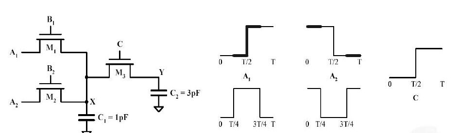
X ve Y gerilimleri, pass transistörlerdeki eşik düşümü nedeniyle en çok V_DD − V_T = 1,5 V'a çıkabilir. τ_x = R_on C₁ = 10 ns, τ_y = R_on C₁ + (R_on + R_on)C₂ = 70 ns; T = 1 µs, T/4 = 250 ns. Çeyrek periyotlarda iletimde olan transistörler sırasıyla M2, M1, M1–M3 ve M3–M2'dir.
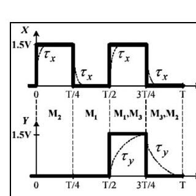
Soru 4 (23p): Karmaşık CMOS geçit
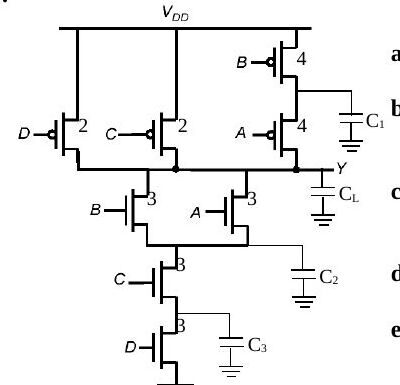
- a) Y = ((A + B)·C·D)′
- b) En kötü t_pHL: C₂ ve C₃ dolu iken (çıkış 1→0 olurken bunlar da boşalmalı). Bunları dolduran önceki girdiler ABCD = 1010, 1110, 0110; 1→0 geçişini sağlayan sonraki girdiler ABCD = 1011, 0111, 1111. En kötü t_pLH: C₁ boşken ve yükseliş paralel transistörlerce sürülmezken, örneğin ABCD = 0111 → 0011.
- c) "Kritik sinyal", bir grup girdi arasında değişimini en son tamamlayan sinyaldir. D en son değişirse C_L, C₂ ve C₃'ün boşalma yolunu tıkar; D'nin transistörünü PDN'nin en üstüne (çıkışa en yakın yere) koymak, D beklenirken C₂ ve C₃'ün boşalmasını sağlar.
- d) P_A=1 = 0,5, P_B=1 = 0,2, P_C=1 = 0,3, P_D=1 = 1 için D hep 1 olduğundan Y = ((A + B)C)′. P(A+B=0) = 0,5 × 0,8 = 0,4, P(A+B=1) = 0,6; P_Y=0 = 0,6 × 0,3 = 0,18, P_Y=1 = 0,82; P₀→₁ = 0,18 × 0,82 = 0,1476.
- e) C_L = 30 fF, V_DD = 2,5 V, f_clock = 250 MHz: P_dyn = C_L V_DD² P₀→₁ f_clock = 30×10⁻¹⁵ × 6,25 × 0,1476 × 250×10⁶ = 6,92 µW.
Soru 5 (19p)
a) Soru 4'teki geçidin DCVSL biçimi:
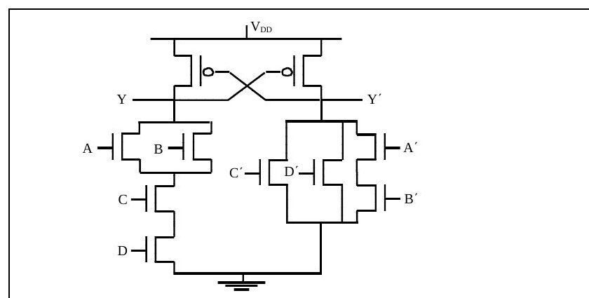
b) (W/L)n = 1, (W/L)p = 2 inverterle aynı direnç için boyutlar Soru 4 şeklinde: PMOS D = 2, C = 2, A = B = 4; NMOS tümü 3.
c) Mantıksal efor: referans inverterde her giriş 2 + 1 = 3 C_unit görür. g_A,B = (4 + 3)/3 = 7/3, g_C,D = (2 + 3)/3 = 5/3.
d) Geçit, 1 boyutlu inverter (8 fF giriş) ile b boyutlu inverter (320 fF yük) arasında a boyutunda; minimum gecikme için a ve b (ilk inverter geçidin B girişine bağlı):
- F = 320/8 = 40, G = 1 × 7/3 × 1 = 7/3, H = GF = 280/3, h = ∛(280/3) = 4,536
- f₁ = 4,536, f₂ = 4,536 × 3/7 = 1,944, f₃ = 4,536
- a = s₂ = f₁g₁/g₂ = 4,536/(7/3) = 1,944, b = s₃ = f₁f₂g₁/g₃ = 4,536 × 1,944 = 8,818
- g₂ = 5/3 alınırsa a = 2,433, b = 9,865 (o da doğru kabul ediliyor)
Puanlar: S1 30p, S2 20p, S3 8p, S4 23p, S5 19p; süre 135 dakika.
2005 – Yarıyıl sonu sınavı (03.06.2005)
Soru 1 (30p, her şık 5p)
a) Kısa devre kaybı ile C_L ilişkisi — yanıt 2004 Soru 1f ile aynı: kaybı azaltmak için C_L'nin büyük olması yararlıdır.
b) "Regenerative" özellik:
Regenerative bir geçidin girdisi nominal değerinden düşük olsa da (geçerli high/low bölgesinde kalmak koşuluyla) çıkışı nominal değere yaklaşır; böylece bozulmuş bir sinyal 2–3 kademeden sonra nominal değerine ulaşır. Bunun için inverterin geçiş bölgesindeki kazancı 1'den büyük olmalıdır (VTC eğiminin 45°'den dik olması). Notta inverter zincirinde v₀…v₆ dalga biçimleri ve f(v) ile finv(v) eğrileri arasında sekerek nominal değere yaklaşan çizim veriliyor.
c) Boşaltılmış bölge yükü — yanıt 2004 Soru 1c ile aynı.
d) Kritik sinyal ve transistör sıralaması:
Girdiler arasında kararlı duruma en son geçen sinyal "kritik sinyal"dir. Kritik sinyalin çıkışa en yakın transistöre girmesi başarımı artırır. Kritik sinyal çıkışa en uzak M1'e girerse 0→1 değişimini tamamlayana dek M1 kesimde kalır ve hiçbir sığaç boşalamaz. Kritik sinyal M3'e bağlanırsa, In₂ ve In₃ = 1 olduğundan C₂ ve C₁ önceden boşalır ve çıkışın 0 olması için yalnız C_L'nin boşalması beklenir.
e) CMOS NAND için t_pHL, t_pLH ve t_p'nin fan-in ile değişimi:
NMOS'lar PDN'de seri bağlıdır: t_pHL = 0,69[R₁C₁ + (R₁ + R₂)C₂ + (R₁ + R₂ + R₃)C₃ + (R₁ + R₂ + R₃ + R₄)C_L], yani fan-in ile karesel artar. PUN'da transistörler paralel olduğundan pull-up direnci değişmez, sığa doğrusal artar; t_pLH fan-in ile doğrusal artar. Fan-out'ta her yeni yük C_L'yi 2C_g kadar artırır; t_p fan-out ile doğrusal artar. (Notta fan-in 2–16 için t_pHL ≈ 1050 ps'ye, t_pLH ≈ 180 ps'ye çıkan grafik var.)
f) Düşük besleme geriliminin artı ve eksileri:
V_DD'nin azaltılması enerji tüketimini karesel olarak düşürür ve belli bir seviyeye kadar kazancı artırır; ama yaklaşık 4kT/q (~100 mV) seviyesinden sonra geçit karakteristiği bozulur ve kazanç 1'e düşer. Başarım olumsuz etkilenir; bu etki düşük V_DD'de çok ciddi, V_DD ≫ V_T + V_DSAT/2'de ihmal edilebilirdir. İç gürültü (ör. crosstalk) de ölçeklenip azalır, fakat dış gürültü ölçeklenmediğinden geçit dış gürültüye daha duyarlı olur; DC karakteristik de V_T gibi parametre değişimlerine daha duyarlıdır.
Soru 2 (25p): Boyutlandırma, logical effort ve olasılık
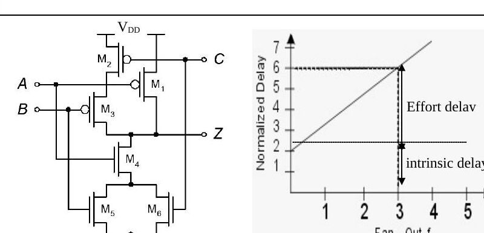
- a) Z'deki pull-up ve pull-down akımları 2:1 birim inverterle aynı: M1 = 2, M2 = M3 = 4, M4 = M5 = M6 = 2.
- b) A, B, C giriş sığaları da eşit olsun: PUN aynı (M1 = 2, M2 = M3 = 4); M4 = x, M5 = M6 = y. Direnç koşulu 1/x + 1/y = 1, sığa koşulu 4 + y = 2 + x ⇒ x = 2 + √2, y = √2.
- c) g = C_in(gate)/C_in(inverter) = (4 + √2)/3.
- d) p(A=0) = 0,2, p(B=0) = 0,5, p(C=0) = 0,4 için doğruluk çizelgesinde Z = 0 yalnız ABC = 101, 110, 111'de. P(Z=0) = 0,8·0,5·0,6 + 0,8·0,5·0,4 + 0,8·0,5·0,6 = 0,64; p(Z: 0→1) = 0,64 × 0,36 = 0,2304.
- e) Gecikme d = h + p, h = gf. Şekil (b)'den f = 3 için gate effort h = 4, intrinsic delay p = 2, eğim g = h/f = 4/3.
Soru 3 (20p): Pass transistörlü XOR
F = A XOR B işlevi bir pass transistör ağı ve çıkış inverteriyle gerçekleştirilecek.
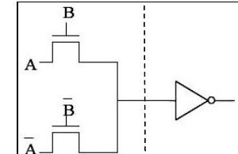
- a) NMOS pass transistör ağı şekildeki gibidir.
- b) Minimum V_DD (V_T0 = 0,5 V, γ = 0,4 V^½, |2φ_F| = 0,6 V, V_M = V_DD/2): A = 1 iken inverter girişi en çok V_DD − V_T'ye çıkar ve body effect vardır (V_SB = V_DD/2). İnverterin çevirebilmesi için V_DD − V_T = V_DD/2, yani V_DD = 2V_T: V_DD = 2[V_T0 + γ(√(|2φ_F| + V_DD/2) − √|2φ_F|)]. İterasyonla V_DD ≈ 1,27 V.
- c) Aynı işlevin DCVSL ve transmission gate gerçekleştirmeleri:
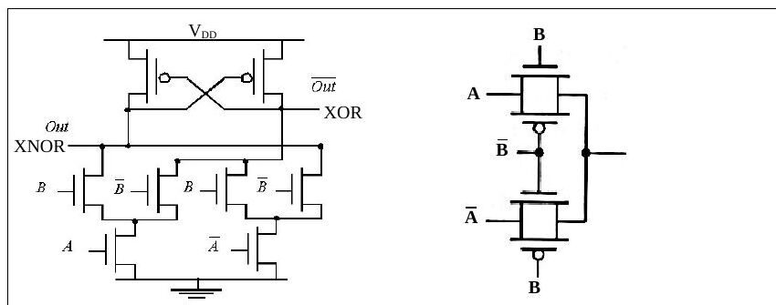
Soru 4 (25p): Buffer zinciri
- a) Giriş sığası C_unit, eşdeğer direnci R_unit, intrinsic sığası C_unit olan inverter, f katı büyük bir inverteri sürerse: τ_p = 0,69 R_unit C_unit (1 + f); f → 0 için τ_p = 0,69 R_unit C_unit = t_p0.
- b) Girişte L→H, H→L değişimlerinde kaynaktan çekilen enerji: E = C_unit(1 + f)V_DD².
- c) C_in = C_unit'ten C_L = 60 C_unit yükü üç inverterle sürmek: F = 60, f = ∛60 = 3,915; ikinci inverter f, üçüncü f² boyutunda. t_p = Nt_p0(1 + F^(1/N)/γ) = 3t_p0(1 + 3,915) = 14,745 t_p0 (γ = 1).
- d) P₀→₁ = 0,5 için energy-delay product: toplam sığa 2C_unit(1 + f + f²) + C_L; E = [2C_unit × 20,24 + 60C_unit]V_DD² × 0,5 = 50,24 C_unit V_DD²; EDP = E × 14,74 t_p0 = 740,53 C_unit V_DD² t_p0.
Puanlar: S1 30p, S2 25p, S3 20p, S4 25p; süre 120 dakika.
2006 – Yarıyıl sonu sınavı (06.06.2006)
Soru 1 (24p, her şık 4p)
a) NMOS'ta linear, saturated ve velocity saturated bölgelerin I_D–V_DS üzerinde ayrılması: sınırlar V_DS = V_GS − V_T ve V_DS = V_DSAT eğrileridir.
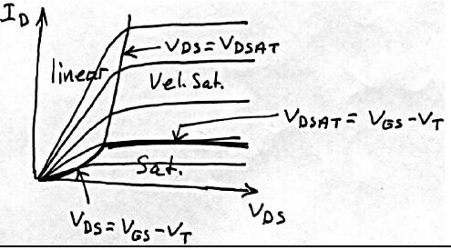
b) Kendisiyle aynı yükü süren inverterde β = (W/L)p/(W/L)n'nin etkisi:
β büyüdükçe (W/L)p büyür; PMOS direnci azalır, pull-up akımı artar ve t_pLH azalır. t_pHL için tersi geçerlidir (PMOS sığası yükü artırır). t_p'nin en küçük değeri, t_pHL = t_pLH noktasından (grafikte β ≈ 2,4) daha küçük bir β değerinde (grafikte ≈ 2) oluşur; yani simetri biraz bozularak daha yüksek başarım elde edilebilir.
c) Dinamik güç P_dyn = C_L V_DD² P₀→₁ f'yi azaltmak için: C_L'yi küçültmek (transistör boyutu, fan-out ve kablo boylarını azaltmak); V_DD'yi düşürmek (enerji karesel azalır ama başarım ve gürültü olumsuz etkilenir, ~4kT/q altında kazanç 1'e düşer); P₀→₁'i azaltmak (mantıksal ve mimari tasarımla anahtarlama etkinliğini düşürmek); saat frekansını düşürmek (başarımı kabul edilemez biçimde düşürdüğünden uygulanmaz, tersine frekans hep artırılmaya çalışılır).
d) Aşağıdaki devrenin doğruluk çizelgesi ve işlevi:
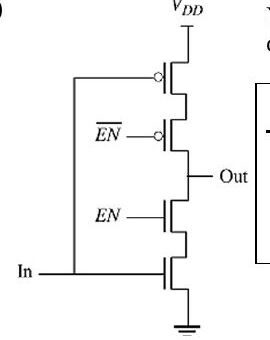
| In | EN | Out |
|---|---|---|
| 0 | 0 | Z |
| 0 | 1 | 1 |
| 1 | 0 | Z |
| 1 | 1 | 0 |
EN = 0 iken çıkış hem topraktan hem V_DD'den yalıtılır (Z, yüksek empedans); devre bir tri-state inverterdır.
e) Grafikteki A, B, C sığaları:
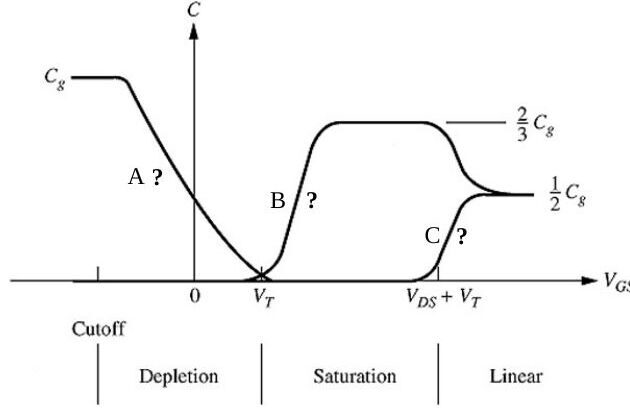
Kesimde yalnız C_GCB vardır; kanal oluşmadığından tüm sığa gate ile body arasındadır ve kanal oluşunca sıfıra düşer (A = C_GCB). Doyumda pinch-off nedeniyle C_GCD sıfırdır, C_GCS = (2/3)C_g (B = C_GCS). Doğrusal bölgede C_g drain ve source arasında eşit paylaşılır (1/2 C_g); C = C_GCD.
f) "Ratioed logic" ve "ratioless logic":
Ratioed logic, transistör sayısını azaltmayı amaçlar: PUN tek bir direnç ya da sürekli doyumda tutulan tek transistörden oluşur. Çıkışı sürekli V_DD'ye çeken PUN ile çıkışı toprağa çeken PDN arasında "contention" olur ve V_OL hiçbir zaman 0 V olamaz; çıkış gerilimi PUN ve PDN dirençlerinin oranına bağlıdır. Artısı azalan transistör sayısı; eksileri azalan gürültü payı (V_OL yüzünden), statik güç tüketimi (PUN yolu hiç kesilmez) ve artan gecikmedir.
Soru 2 (20p): Ölçümlerden V_T0, k, γ, λ
2φ_F = −0,6 V alınarak:
| V_GS (V) | V_DS (V) | V_BS (V) | I_D (µA) |
|---|---|---|---|
| 2 | 5 | 0 | 10 |
| 5 | 5 | 0 | 400 |
| 5 | 5 | −3 | 280 |
| 5 | 8 | 0 | 480 |
V_DS ≥ V_GS olduğundan tümü doyumda: I_DSAT = (k/2)(V_GS − V_T)²(1 + λV_DS).
- λ: satır 4 / satır 2: (1 + 8λ)/(1 + 5λ) = 480/400 ⇒ λ = 0,1 V⁻¹
- V_T0: satır 2 / satır 1: (5 − V_T0)²/(2 − V_T0)² = 40 ⇒ V_T0 = 1,44 V ya da 2,41 V; ikincisi olanaksız ⇒ V_T0 = 1,44 V
- k: 400 = (k/2)(5 − 1,44)²(1 + 0,1×5) ⇒ k = 42 µA/V²
- γ: satır 3: 280 = (42/2)(5 − V_T)²(1,5) ⇒ V_T = 2,02 V; 2,02 = 1,44 + γ(√(0,6 + 3) − √0,6) ⇒ γ = 0,52 V^½
Soru 3 (27p): Logical effort ve güç
a) C_inv'den 1200 C_inv yükü süren 4 inverterli zincir: F = 1200, f = ⁴√1200 = 5,89; boyutlar 1, f = 5,89, f² = 34,64, f³ = 203,89; t_p = 4t_p0(1 + 5,89) = 27,54 t_p0 (γ = 1). En iyi kademe sayısı için N artırılırsa: N = 5'te 25,64 t_p0, N = 6'da 25,56 t_p0 (en küçük), N = 7'de 26,27 t_p0. N = 6 için boyutlar 1; 3,26; 10,63; 34,6; 112,9; 368,2.
b) NAND (2 fF giriş) → inverter → NOR → 200 fF yük zincirinin boyutlandırılması (minimum inverterde PMOS/NMOS = 2):
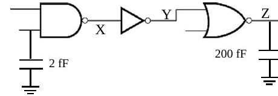
- g_NAND = 4/3, g_inv = 1, g_NOR = 5/3; F = 200/2 = 100, G = 20/9, H = 2000/9, h = ∛H ≈ 6
- f₁ = 6/(4/3) = 4,5, f₂ = 6, f₃ = 6/(5/3) = 3,6
- C_in = g₁s₁C_ref ⇒ 2 = (4/3)s₁ ⇒ s₁ = 1,5; s₂ = f₁g₁s₁/g₂ = 9; s₃ = f₁f₂g₁s₁/g₃ = 32,4
c) Tüm açık girdilerin 1 olma olasılığı 0,4; V_DD = 2,5 V, f_clock = 250 MHz:
- P_X=0 = 0,4 × 0,4 = 0,16 (NAND), P_Y=0 = P_X=1 = 0,84
- P_Z=1 = P_Y=0 × (1 − 0,4) = 0,504, P_Z=0 = 0,496; P₀→₁ = 0,496 × 0,504 ≈ 0,25
- P_dyn = 200×10⁻¹⁵ × 2,5² × 0,25 × 250×10⁶ = 78,125 µW
Soru 4 (29p): F(A, B, C) = AB + AB′C + A′C′
En az transistörle a) CMOS, b) yalnız transmission gate, c) DCVSL tasarımı (değillenmiş girişler mevcut). Doğruluk çizelgesi: AB = 00 → C′, 01 → C′, 10 → C, 11 → 1. Karnaugh haritasından F′ = AB′C′ + A′C, dolayısıyla CMOS geçit F = (AB′C′ + A′C)′ olarak tek kademede kurulur.
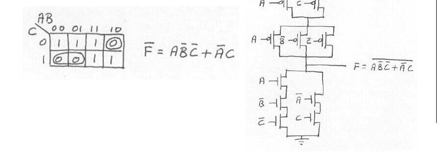
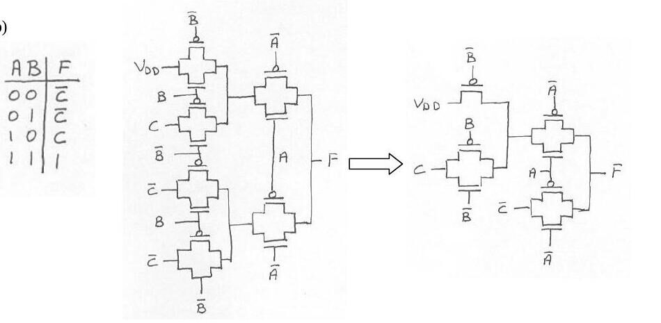
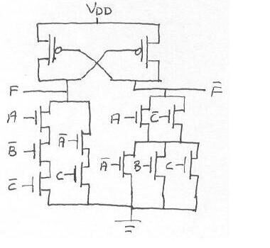
d) Başlangıçta sığaç V_DD'ye doluyken, kararlı durumda A, B, C gerilimleri:
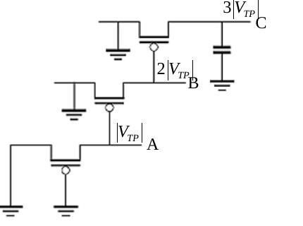
PMOS'larda V_GS, V_TP'nin altına düşemez. En alttaki transistörden başlayarak yukarı doğru gidildiğinde A = |V_TP|, B = 2|V_TP|, C = 3|V_TP| bulunur.
Puanlar: S1 24p, S2 20p, S3 27p, S4 29p; süre 120 dakika.